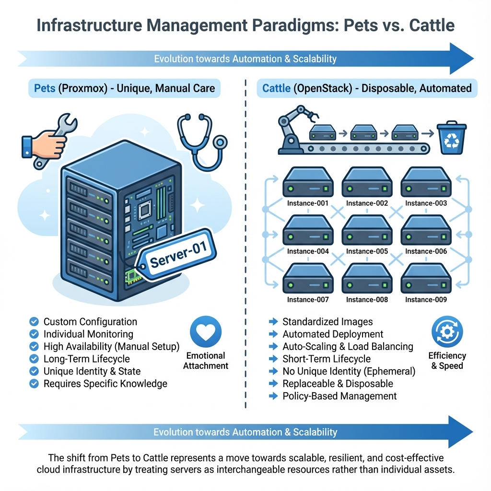
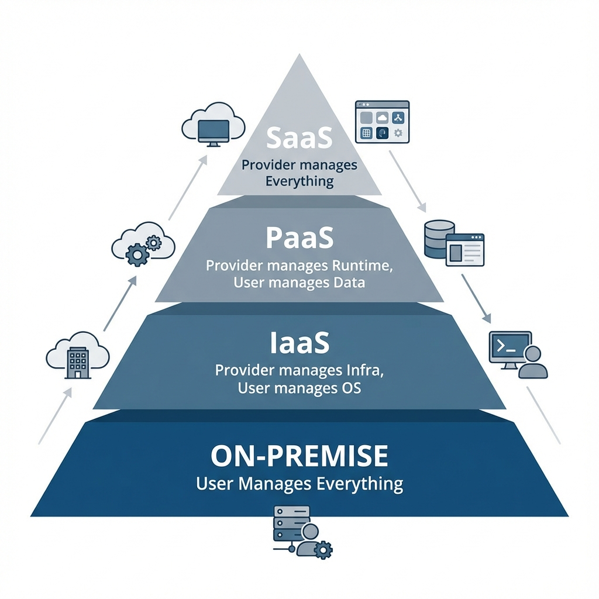
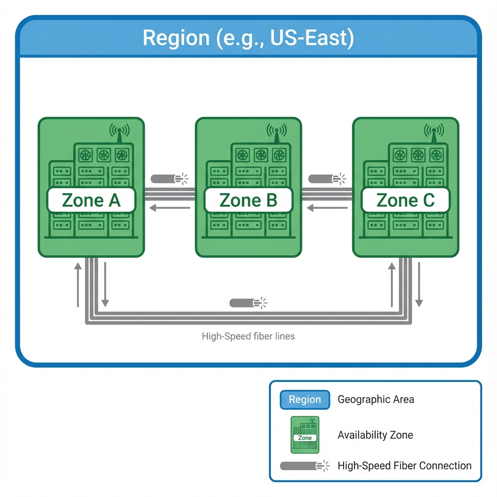
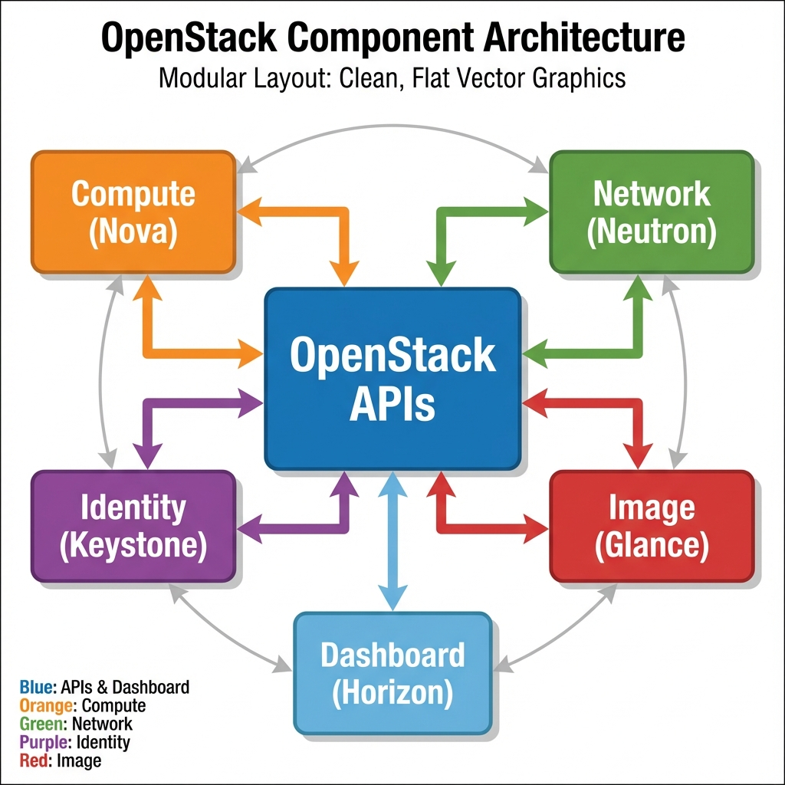
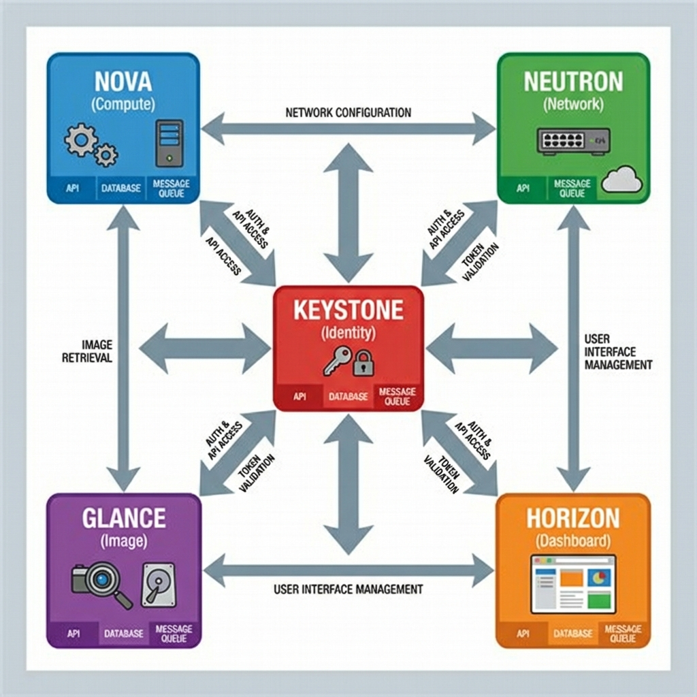
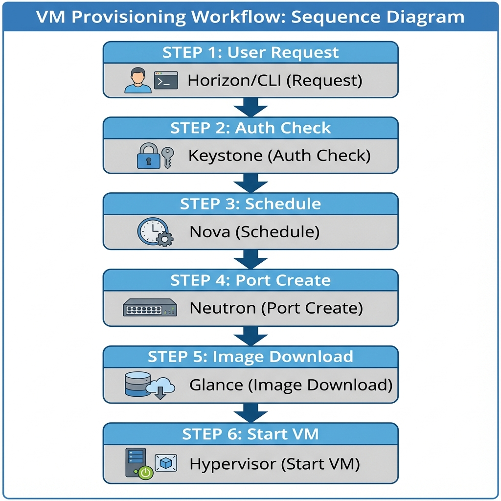

Transition to Cloud Computing Concepts
Student NotesCourse: Computer Systems Engineering Module: Operating Systems 3 (Virtualisation & Cloud Technologies) Topic: Transition to Cloud ComputingComputing services delivered over the internet Concepts Estimated Reading Time: 20 Minutes
[!TIP] How to succeed in this week: This week is the bridgeNetwork device connecting network segments from on-premise to cloud thinking. The shift from "servers" to "services" is fundamental. Pay attention to the business drivers for cloud adoption—technical skills alone aren't enough.
Welcome to Week 7!
Congratulations. Up to this point, you have mastered VirtualizationThe creation of virtual versions of physical computing resources. You can manually create Virtual Machines (VMs), configure bridges, and manage storage volumes. You are a competent System Administrator capable of managing "Pet" servers. However, the modern enterprise has evolved. We no longer want to file a ticket and wait three days for a SysAdmin to create a VMVirtual Machine - A software-based emulation of a physical computer - . We want to click a button and receive a resource in 30 seconds.
This week, we transition from ProxmoxOpen-source virtualization platform combining KVM and LXC and LXCLinux Containers - OS-level virtualization and LXCLinux Containers - OS-level virtualization platform combining KVMKernel-based Virtual Machine - A Type 1 hypervisor HypervisorSoftware that creates and manages virtual machines" Type 1 hypervisorA bare-metal hypervisor that runs directly on hardware and LXCLinux Containers - OS-level virtualization (A VirtualizationThe creation of virtual versions of physical computing resources Platform) to OpenStackOpen-source cloud computing platform platform (A Cloud Operating System), shifting our perspective from managing individual servers to managing infinite pools of resources.
Core Comparison: Proxmox platform combining KVM - Type 1 hypervisor and LXC vs. OpenStack platform
Before we dive deep, it is crucial to understand why both exist and where they fit in the Enterprise. It comes down to a fundamental philosophical difference in how infrastructure is treated: the difference between "Pets" and "Cattle."
 Figure 1: Pets vs Cattle - ProxmoxOpen-source virtualization platform combining KVM and LXC and LXCLinux Containers - OS-level virtualization and LXCLinux Containers - OS-level virtualization platform combining KVMKernel-based Virtual Machine - A Type 1 hypervisor HypervisorSoftware that creates and manages virtual machines" Type 1 hypervisorA bare-metal hypervisor that runs directly on hardware and LXCLinux Containers - OS-level virtualization manages individual, unique servers (Pets), while OpenStackOpen-source cloud computing platform platform manages disposable, scalable fleets (Cattle)
1. The Fundamental Difference
ProxmoxOpen-source virtualization platform combining KVM and LXC and LXCLinux Containers - OS-level virtualization and LXCLinux Containers - OS-level virtualization platform combining KVMKernel-based Virtual Machine - A Type 1 hypervisor HypervisorSoftware that creates and manages virtual machines" Type 1 hypervisorA bare-metal hypervisor that runs directly on hardware and LXCLinux Containers - OS-level virtualization VE is built for the "Pet" philosophy. In this model, each server is unique, important, and manually cared for. If a "Pet" server gets sick (fails), the administrator rushes to nurse it back to health. This approach implies vertical scaling (making the VMVirtual Machine - A software-based emulation of a physical computer - bigger) and is ideal for workloads that require manual fine-tuning and persistence.
OpenStackOpen-source cloud computing platform platform , in contrast, is built for the "Cattle" philosophy. In this model, servers are disposable resources mass-produced in a factory. They are given numbers, not names. If a "Cattle" server gets sick, it is replaced, not fixed. This approach relies on horizontal scaling (adding more VMs) and is designed for developers who consume infrastructure via APIs.
2. Enterprise Deployment Scenarios
ProxmoxOpen-source virtualization platform combining KVM and LXC and LXCLinux Containers - OS-level virtualization and LXCLinux Containers - OS-level virtualization platform combining KVMKernel-based Virtual Machine - A Type 1 hypervisor HypervisorSoftware that creates and manages virtual machines" Type 1 hypervisorA bare-metal hypervisor that runs directly on hardware and LXCLinux Containers - OS-level virtualization in the Enterprise is typically found in Small-to-Medium Enterprises (SMEs) or specific branch offices. It excels at hosting "static" workloads that do not change often, such as File Servers, Print Servers, Legacy ERP systems, and Domain Controllers. IT Managers choose ProxmoxOpen-source virtualization platform combining KVM and LXC and LXCLinux Containers - OS-level virtualization and LXCLinux Containers - OS-level virtualization platform combining KVMKernel-based Virtual Machine - A Type 1 hypervisor HypervisorSoftware that creates and manages virtual machines" Type 1 hypervisorA bare-metal hypervisor that runs directly on hardware and LXCLinux Containers - OS-level virtualization because it is lightweight, easy to maintain, and requires less hardware overhead than a full cloud stack.
OpenStackOpen-source cloud computing platform platform in the Enterprise is the domain of Large Enterprises, Telecommunications providers, and Research Institutes. It is designed for "dynamic" workloads where infrastructure needs to scale up and down automatically to match demand, such as web applications, CI/CD build pipelines, and big data clusters. Organizations choose OpenStackOpen-source cloud computing platform platform when they need to provide an "AWS-like" self-service experience to their internal teams while strictly maintaining Data Sovereignty within their own private data centers.
1. Defining "The Cloud" (NIST Model)
According to the National Institute of Standards and Technology (NIST), a system can only be classified as a "Cloud" if it strictly meets five specific criteria. If any one of these is missing, it is simply a virtualized data center, not a cloud.
- On-Demand Self-Service: A consumer must be able to provision computing capabilities automatically without requiring any human interaction from the service provider.
- Broad Network Access: Capabilities are available over the network and accessed through standard mechanisms (web browsers/APIs).
- Resource Pooling: The provider's computing resources are pooled to serve multiple consumers, with physical resources dynamically assigned according to demand. The user has no control or knowledge over the exact physical location of the resource.
- Rapid Elasticity: Capabilities can be theoretically provisioned and released instantly to scale rapidly outward and inward commensurate with demand.
- Measured Service: Resource usage can be monitored, controlled, and reported, providing transparency for both the provider and consumer (Pay-as-you-Go).
1.1 Service Models (The Pizza Analogy)
Cloud computing is delivered via three primary models, best understood through the famous "Pizza as a Service" analogy which compares managing infrastructure to eating dinner.
 Figure 2: NIST Cloud Service Models - The progression from managing everything (On-Prem) to managing nothing (SaaS)
On-Premise (Homemade Pizza) represents traditional IT. You own the kitchen, buy the ingredients, cook the pizza, and clean the table. You are responsible for managing every layer of the stack, from networking cables to the application code.
Infrastructure as a Service - IaaS (Take & Bake Pizza) gives you the "Kitchen" but you bring the "Pizza." The provider manages the physical hardware (Networking, Storage, Servers, Virtualization). You rent the Virtual Machine and are responsible for installing the Operating System, patching it, and running your application. This is the model OpenStack platform provides.
Platform as a Service - PaaS (Pizza Delivery) handles almost everything. The provider manages the hardware and the Operating System runtime. You simply provide the code (the "Order") and they deliver the running application. You don't worry about Windows updates or Linux kernels; you focus solely on development.
Software as a Service - SaaS (Dining Out) is the ultimate abstraction. You simply go to the restaurant and eat. The provider manages everything from the hardware to the application software itself. You just log in and use the tool (e.g., Gmail, Salesforce).
1.2 Service Models Expanded
While the Pizza analogy serves as an excellent high-level overview, engineering teams require a more granular understanding of responsibilities in the cloud.
Infrastructure as a Service (IaaS) represents the foundational layer of cloud computing. In this model, the cloud provider supplies the raw compute power, storage, and networking hardware, effectively serving as a virtual data center. As a consumer, you retain the highest level of control but also bear the greatest responsibility. You are tasked with installing the operating system, patching the kernel, configuring firewalls, and managing all middleware and runtime environments. It offers the flexibility to run almost any workload but requires significant administrative overhead. Prominent examples include AWS EC2, Google Compute Engine, and our focus for this course, OpenStack platform .
Platform as a Service (PaaS) abstracts the underlying infrastructure to provide a streamlined environment specifically for developers. The provider manages the servers, storage, networking, operating system, and middleware, allowing developers to focus solely on writing and deploying code. This model significantly increases convenience and speed of deployment but sacrifices granular control over the environment. If your application requires a custom kernel module or specific OS tweak, PaaS may be too restrictive. Common examples include Heroku, Google App Engine, and AWS Lambda.
Software as a Service (SaaS) delivers fully functional applications directly to the end-user over the internet. In this model, the consumer has zero visibility or control over the underlying infrastructure or platform. The provider manages everything from the hardware to the application code itself, ensuring high availability and security. This model creates maximum convenience for users who simply need a tool to perform a task, such as email or document collaboration. Examples include Gmail, Salesforce, and Microsoft 365.
1.3 Common Cloud Providers
The global cloud market is segmented into public hyperscalers and private cloud solutions, each catering to specific enterprise needs.
Amazon Web Services (AWS) is the pioneer and current market leader in public cloud computing. It offers the most extensive catalog of services, numbering over 200 distinct products. AWS is often the default choice for startups and enterprises seeking a "one-stop-shop" for everything from simple compute to complex machine learning and satellite ground stations. Its maturity and breadth making it a safe, albeit complex, choice for general-purpose cloud computing.
Microsoft Azure dominates the enterprise sector, particularly among organizations already invested in the Microsoft ecosystem. Its primary strength lies in its seamless integration with Windows Server, Active Directory, and Microsoft 365. For companies running .NET applications or requiring hybrid cloud setups that extend their on-premise Active Directory to the cloud, Azure offers the path of least resistance.
Google Cloud Platform (GCP) differentiates itself through engineering excellence in data analytics, artificial intelligence, and container orchestration. Having invented Kubernetes orchestration platform , Google makes GCP the premier environment for container-native applications and microservices. It is frequently chosen by organizations heavily focused on big data processing and machine learning workflows.
OpenStack platform stands apart as the de facto standard for Private Cloud infrastructure. Unlike the hyperscalers where you rent space on someone else's computer, OpenStack platform allows you to build the cloud in your own data center. This is the preferred choice for telecommunications providers, governments, and research institutes (like CERN) who require absolute control over their data sovereignty, or who operate at such a massive scale that renting public cloud resources becomes cost-prohibitive.
1.4 Cloud Deployment Models
Understanding the "Where" and "Who" of cloud computing is defined by three primary deployment models.
 Figure 3: Cloud Deployment Models - Public (Shared), Private (Dedicated), and Hybrid (Bridged)
Figure 3: Cloud Deployment Models - Public (Shared), Private (Dedicated), and Hybrid (Bridged)
Public Cloud is the most common model, where resources are owned and operated by a third-party provider (like AWS or Azure) and shared across millions of customers via the public internet. It offers the highest level of efficiency and elasticity but requires trusting the provider with your data and accepting a multi-tenant environment where your "neighbor" could be anyone. It is ideal for startups, web hosting, and highly variable workloads that need to scale instantly.
Private Cloud is infrastructure provisioned for the exclusive use of a single organization. It can be hosted on-premise (in your own building) or by a third-party, but the hardware is strictly dedicated and never shared with other customers. This model offers maximum control, security, and performance customization, making it the non-negotiable choice for banks, governments, and regulated industries. OpenStack platform is the global standard for building these Private Clouds.
Hybrid Cloud represents the best of both worlds, combining Public and Private clouds bound together by technology that allows data and applications to be shared between them. A typical enterprise use case involves keeping sensitive customer databases "on-premise" in a Private Cloud for strict security compliance, while running web-server frontends in a Public Cloud to take advantage of infinite scaling during traffic spikes (a technique known as Cloud Bursting).
1.5 Cloud Structure: Regions and Zones
The cloud is not a nebulous entity floating in the sky; it is composed of massive physical data centers connected by high-speed fiber optics. Understanding its physical geography is essential for designing resilient applications.
 Figure 4: Regions vs Availability Zones - A Region contains multiple isolated AZs to prevent a single disaster from taking down the entire service
A Region is a specific geographical location (e.g., "US-East", "Europe-West", "Africa-South") that contains a cluster of data centers. Each region is completely independent; if the US-East region loses power or suffers a natural disaster, the Europe-West region remains unaffected. Data compliance laws (such as GDPR or POPI) often dictate exactly which Region you must store your user data in to remain within legal jurisdictions.
An Availability Zone (AZ) is an isolated location within a Region. Think of an AZ as a separate physical building (or cluster of buildings) with its own independent power grids, cooling systems, and networking infrastructure. A Region is typically made up of multiple AZs (usually 3 or more). To achieve High Availability, cloud architects deploy applications across multiple AZs. If "Building A" burns down, "Building B" continues to run the application without interruption.
1.6 The Four Pillars of Cloud Infrastructure
Regardless of whether you use AWS, Azure, or OpenStack platform , all cloud platforms are built on four fundamental pillars.
Compute represents the processing power (CPU and RAM). In the cloud, this manifests as ephemeral Virtual Machines (Instances) or Containers. These resources are designed to be launched, used, and destroyed on demand. We treat them as disposable workers rather than permanent fixtures.
Networking is the nervous system of the cloud. It involves creating Virtual Private Clouds (VPCs), subnets, and defining how traffic flows between them. In a software-defined cloud, we program routers, load balancers, and floating IPs using APIs rather than plugging in physical cables.
Storage is divided into two primary types: Block Storage (like a virtual hard drive attached to a VM - ) for operating systems and databases, and Object Storage (like a massive, limitless bucket) for storing unstructured files like photos, videos, and backups.
Security in the cloud shifts from physical perimeter defense (locks and guards) to identity-based and software-defined security. Security Groups act as virtual distributed firewalls applied directly to each instance, controlling inbound and outbound traffic at the packet level regardless of network topology. Identity and Access Management (IAM) acts as the central directory, strictly controlling who (users/services) can perform what actions (permissions) on which specific resources.
1.7 The Shared Responsibility Model
Moving to the cloud does not absolve you of security responsibilities; it simply changes what you are responsible for. The Shared Responsibility Model is a framework that defines the security obligations of both the Cloud Provider and the Customer.
In an On-Premise environment, you are responsible for everything from the physical door lock to the user's password. In an IaaS model (like OpenStack platform ), the Provider secures the physical data center, network hardware, and hypervisor. You, the Customer, are responsible for securing the Guest OS , applications, data, and firewall configurations. As you move up the stack to PaaS and SaaS, the Provider takes on more responsibility (like patching the OS), but you are always responsible for your Data and Identity (User Accounts).
1.8 Cloud Economics: CapEx vs. OpEx
One of the primary drivers for cloud adoption is financial, specifically the shift in how IT is funded.
Capital Expenditure (CapEx) is the traditional model where you spend a large amount of money upfront to buy physical servers, storage arrays, and network switches. This is an "Investment" that depreciates over 3-5 years. You pay for the maximum capacity you might need, which often leads to underutilization.
Operational Expenditure (OpEx) is the cloud model where you pay for services as you use them (Pay-as-you-Go). There is no upfront cost. This aligns spending with actual usage. If you shut down your VMs at night, you stop paying. This shifts IT spending from a "Fixed Cost" to a "Variable Cost," allowing businesses to be more agile.
1.9 Scalability vs. Elasticity
While often used interchangeably by marketing teams, these two terms describe fundamentally different capabilities of a cloud architecture.
Scalability is the strategic ability of a system to handle projected growth over time. A scalable system typically involves human intervention to upgrade capacity. This can be achieved through Vertical Scaling (scaling up by adding more RAM/CPU to a single server) or Horizontal Scaling (scaling out by adding more servers to a cluster). It effectively answers the question: "Can we get bigger if the company grows?"
Elasticity is the tactical ability to scale resources automatically in real-time response to demand, in both directions. An elastic system adds servers when traffic spikes (e.g., during a Black Friday sale) and removes them when traffic drops (at 3 AM), maintaining performance while optimizing cost. It answers the question: "Can the system resize itself right now without human help?"
1.10 Migration Strategies (The 6 Rs)
Transitioning to the cloud is not a simple "copy and paste" operation; it requires a strategic decision for each application in your portfolio. The industry-standard framework, popularized by Amazon Web Services (AWS) and Gartner, defines the "6 Rs" of migration.
1. Rehost ("Lift and Shift") This is the fastest and lowest-risk strategy. It involves moving an application from on-premise to the cloud without making any changes to its underlying architecture. For example, exporting a virtual machine from VMware and importing it directly into OpenStack platform . While quick, this method typically fails to realize the long-term benefits of the cloud, such as auto-scaling and elasticity, because the application still thinks it is running on a static server.
2. Replatform ("Lift, Tweak, and Shift") This strategy involves making small optimizations to the application to run more efficiently in the cloud without rewriting the core code. A common example is migrating a local MySQL database to a managed SQL service (PaaS) or containerizing a legacy application to run on Kubernetes orchestration platform . This offers a middle ground, providing some cloud benefits without the heavy cost of a full rewrite.
3. Refactor (Re-architect) Refactoring is the most expensive but most rewarding strategy. It involves rewriting the application from scratch to be "Cloud Native." For instance, breaking a monolithic Java application into dozens of Python microservices that communicate via APIs. This allows the application to scale infinitely and heal itself, fully unlocking the power of the cloud.
4. Repurchase ("Drop and Shop") This involves abandoning the legacy application entirely and moving to a commercial SaaS solution. A classic example is decommissioning an on-premise Microsoft Exchange Server and migrating all users to Microsoft 365. Further examples include moving logical CRM systems to Salesforce.
5. Retire Upon analysis, many organizations discover applications that are no longer useful. These are simply turned off, resulting in immediate cost savings.
6. Retain Some applications are simply too complex, too sensitive, or too intertwined with legacy hardware (like mainframes) to serve as viable candidates for migration. These are deliberately kept on-premise.
Section 1 Checkpoint
Summary:
- NIST Cloud Definition: Self-Service, Broad Access, Pooling, Elasticity, Measured.
- Service Models: IaaS (Rent Hardware), PaaS (Rent Platform), SaaS (Rent App).
- Deployment: Public (Shared), Private (Dedicated), Hybrid (Mixed).
- Shared Responsibility: You are always responsible for Data and Identity.
- Economics: Shift from CapEx (Investment) to OpEx (Consumption).
- Dynamics: Scalability (Growth) vs Elasticity (Auto-sizing).
- Migration: Rehost (Fastest) vs Refactor (Best Long-term).
Reflection:
- In a SaaS model (like Gmail), who is responsible if you share a confidential file with the wrong person? (Hint: Shared Responsibility).
- Why does the CFO (Chief Financial Officer) prefer OpEx over CapEx for a risky new startup?
- Can a system be Scalable but not Elastic? Give an example.
- Which migration strategy would you use for a 20-year-old Legacy ERP system that nobody knows how to modify? (Hint: Lift and Shift).
Resources:
- NIST Cloud Computing Definition (PDF)
- Book: CompTIA Cloud+ Certification Study Guide (Exam CV0-003) - Ben Piper.
- Whitepaper: AWS "6 Strategies for Migrating Applications"
2. Introducing OpenStack platform
 Figure 5: The OpenStack platform Component Architecture - A modular operating system for data centers
OpenStack platform is the standard for building Private Clouds. It is used by Walmart, CERN, and major telecommunications providers to build their own internal "AWS." It is not a single monolithic program but rather a family of independent projects designed to work together via a standard set of APIs.
2.1 The "Core" Services (Remember these Names!)
OpenStack platform can be overwhelming because it consists of dozens of projects. However, a functional cloud only requires a handful of core services to operate. These "Big 5" services form the foundation of almost every deployment, handling computation, networking, identity, storage images, and the user interface.
 Figure 6: OpenStack platform Core Services Map - Highlighting the interaction between Nova platform compute service for VMs , Neutron platform networking service , Glance platform image service , Keystone platform identity/authentication service , and Horizon platform web dashboard
2.1.1 Nova platform compute service for VMs (Compute)
Nova platform compute service for VMs is the heart of OpenStack platform . It is responsible for the entire lifecycle of a Virtual Machine (Instance), from spawning to termination. It is not a single binary but a distributed system. The nova platform compute service for VMs -api accepts requests, the nova platform compute service for VMs -scheduler uses complex filters (like RamFilter) to decide which physical server is best suited for the VM - , and nova platform compute service for VMs -compute talks to the underlying hypervisor (KVM - Type 1 hypervisor ) to actually run the process.
2.1.2 Neutron platform networking service (Networking)
Neutron platform networking service is the "Plumber" of the cloud. It manages "Software Defined Networking" (SDN). It uses the ML2 Plugin (Modular Layer 2) to talk to different backend technologies, such as Open vSwitch or Linux Bridge. It employs an L3 Agent to handle virtual routing and floating IPs, and a DHCP Agent to automatically assign IP addresses to instances via dnsmasq.
2.1.3 Keystone platform identity/authentication service (Identity)
Keystone platform identity/authentication service is the "Bouncer." It provides a single point of integration for securing the cloud. It maintains the Service Catalog (a registry of where all other APIs live) and issues Fernet Tokens—lightweight, encrypted keys—that users and services present to authenticate themselves for every single action.
2.1.4 Glance platform image service (Image)
Glance platform image service is the "Librarian." It stores and retrieves virtual machine disk images. When you want to launch an "Ubuntu 22.04" server, Nova platform compute service for VMs asks Glance platform image service to provide the image file. Glance platform image service can store these images on a local hard drive, or more commonly, in an enterprise Object Storage system like Ceph, ensuring that your "golden master" images remain immutable and secure.
2.1.5 Horizon platform web dashboard (Dashboard)
Horizon platform web dashboard is the "Face" of OpenStack platform . It provides a web-based graphical user interface (GUI) that allows users to launch instances, configure networks, and managed storage without typing a single command. Under the hood, Horizon platform web dashboard is simply a Python Django web application that translates user clicks into API calls sent to Nova platform compute service for VMs , Neutron platform networking service , and Keystone platform identity/authentication service .
2.2 How they work together: A Day in the Life of a Request
To understand cloud architecture, let's trace exactly what happens when a user clicks "Launch Instance". It is a coordinated dance between the services.
 Figure 7: The 5-Step VM - Provisioning Workflow - A coordinated sequence of API calls ensuring authentication, scheduling, networking, and storage provisioning
Step 1: Authorization (Keystone platform identity/authentication service )
The user's request first goes to Keystone platform identity/authentication service . It validates the user's Token and checks the Policy engine to ensure they have the specific permission (compute:create) required to launch an instance. If the token is expired or the user lacks the "Member" role, the request is rejected immediately with a 403 Forbidden error, protecting the cloud resources from unauthorized access.
Step 2: Scheduling (Nova platform compute service for VMs )
Once authorized, the request is passed to nova-api. It asks the nova-scheduler: "Where should I put this VM - ?" The Scheduler analyzes the state of all available compute nodes using filters. Data centers are heterogeneous, so the scheduler checks constraints: "Does this node have 4GB RAM free?" (RamFilter) and "Is this node currently alive?" (ComputeFilter). It then selects the mathematically optimal candidate (e.g., Compute-Node-05).
Step 3: Network Provisioning (Neutron platform networking service )
Before starting the VM - , Nova platform compute service for VMs acts as a proxy and contacts Neutron platform networking service . It requests a port on the specified network (e.g., private-net). Neutron platform networking service creates a logical port entry in its database, assigns a MAC address (e.g., fa:16:3e...), and allocates an IP address (e.g., 192.168.1.15) via its IPAM driver. Crucially, it creates this logical reservation before any hardware is touched.
Step 4: Image Retrieval (Glance platform image service )
The nova-compute service on the selected node (Compute-Node-05) receives the command to build. It checks its local image cache for the requested OS image (e.g., Ubuntu 22.04). If the image is missing, it contacts Glance platform image service to download it securely via an HTTP API. It then converts the image into a bootable volume, typically using a Copy-on-Write (CoW) backing file to save space and time.
Step 5: Wiring (The Final Assembly)
Finally, nova-compute instructs the Hypervisor (KVM - Type 1 hypervisor /Libvirt) to define the VM - . Simultaneously, the Neutron platform networking service L2 Agent on that node detects the new port data and programs the local virtual switch (Open vSwitch) to connect the VM - 's virtual network - communication card to the physical network bridge. Only then does the VM - start booting, drawing its IP address from the DHCP agent as it initializes.
Section 2 Checkpoint
Summary:
- Nova platform compute service for VMs : Compute (The Brain).
- Neutron platform networking service : Networking (The Plumber).
- Keystone platform identity/authentication service : Identity/Auth (The Bouncer).
- Glance platform image service : Image Storage (The Librarian).
- Horizon platform web dashboard : Dashboard GUI (The Face).
Reflection:
- If Keystone platform identity/authentication service goes down, can you still log in to Horizon platform web dashboard ?
- Why does Nova platform compute service for VMs need to talk to Glance platform image service before starting a VM - ?
Resources:
3. Additional Resources
- OpenStack platform Service Map: OpenStack.org
- The Pizza as a Service Model: Medium Article
- NIST Cloud Definition: NIST.gov
- CompTIA Cloud+ Hub: Official Site (Syllabus for CV0-003/004)
- OpenStack platform vs Proxmox platform combining KVM - Type 1 hypervisor and LXC (Forum Discussion): Proxmox Forum
6. Lab Exercises
- Lab 1: Nested Virtualization
- Goal: Setting up Nested Virt (OpenStack platform prep).
Test Your Knowledge
Ready to check your understanding of this week's material? Take the interactive quiz now!
Start Quiz